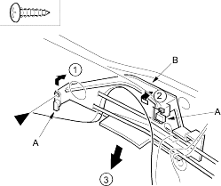
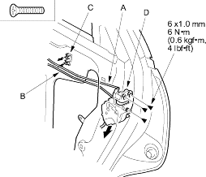
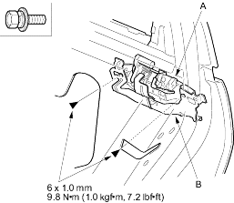

- Raise the glass fully.
- Remove these items:
- If equipped, remove the screw and release the hooks (A), then remove the rod protector (B).
Fastener Location  : Screw, 1
: Screw, 1

- Release the inner handle rod (A) and lock rod (B) from the rod holder (C), and remove the screws securing the latch (D), then move the latch down. Take care not to bend any of the rods.
| Fastener Locations |
 : Screw, 3 : Screw, 3 |

- Remove the bolts securing the outer handle (A) and outer handle protector (B) (for some models).
Fastener Locations : Bolt, 2
